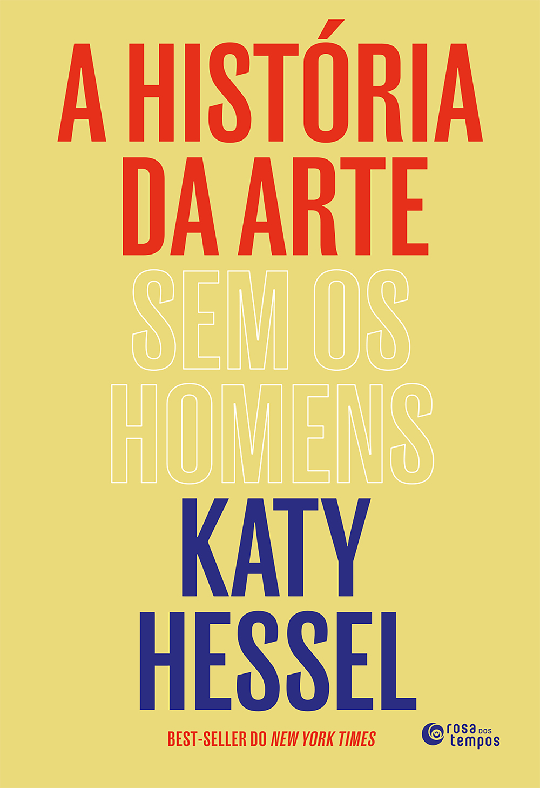
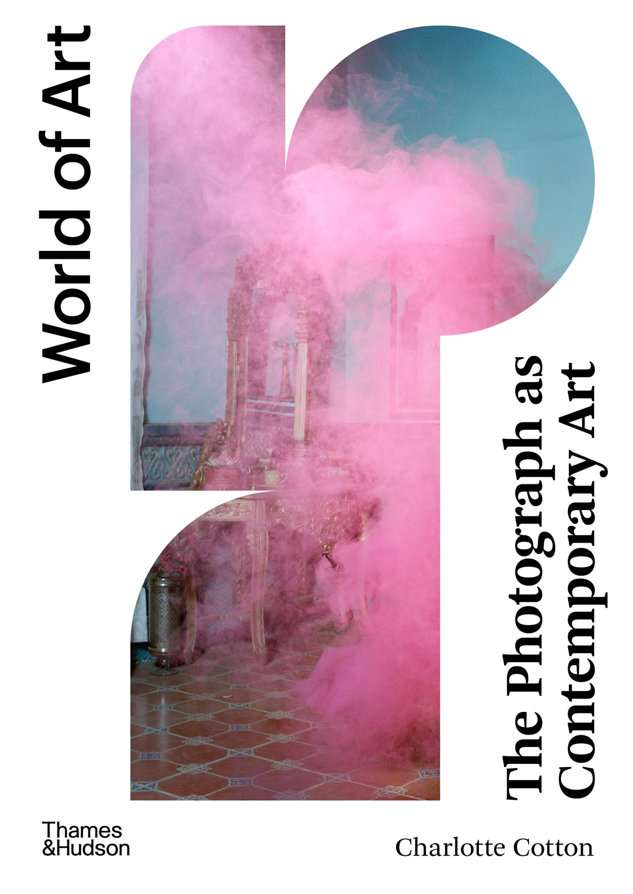
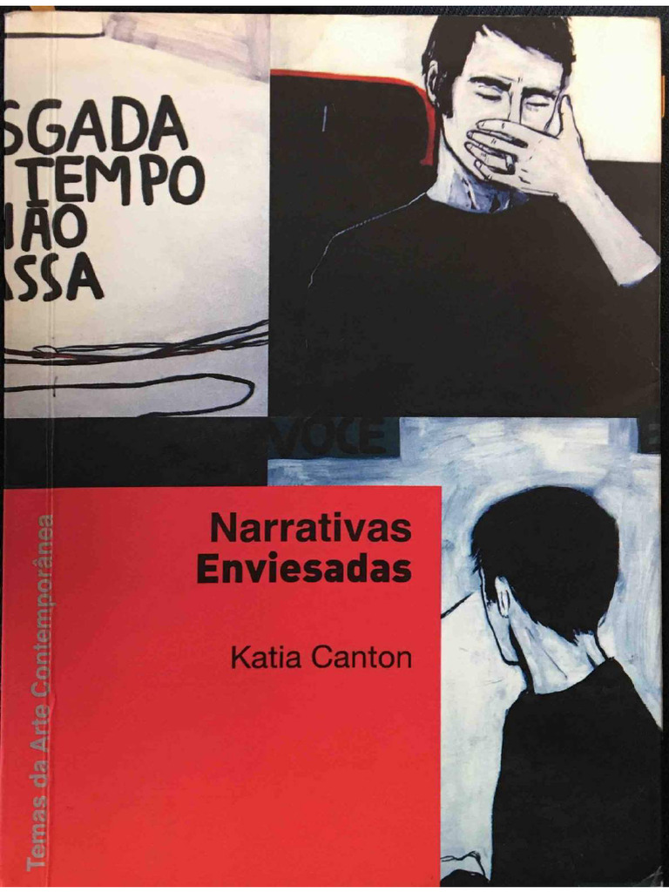

Vocabulário
Raymond Williams
Palavras-chave
História social de termos como cultura, indústria, classe e moderno. Ajuda a tratar palavras aparentemente evidentes como campos de conflito, e não como definições estáveis.
Senac Lapa Scipião · material de apoio
Livros para continuar o percurso entre modernidade, modernismos, fotografia, história da arte e as disputas do presente.
Como usar esta página
As obras da primeira parte foram apresentadas nos slides de Aulas - Senac. As resenhas não substituem a leitura: indicam o problema que cada livro pode ajudar a formular e, quando necessário, o cuidado crítico com que ele deve ser mobilizado.
A segunda parte amplia o curso para questões contemporâneas de narrativa, imagem, posição, guerra, racismo e arquivo. Não é uma bibliografia obrigatória, nem um novo cânone. É uma constelação para pesquisas futuras.
Leituras que atravessam a disciplina
História da arte, fotografia e formas não lineares de narrar compõem o núcleo visual desta bibliografia.



01 · modernidade e crítica
Textos para evitar que “moderno” seja apenas sinônimo de novidade ou uma cronologia de estilos.
Vocabulário
História social de termos como cultura, indústria, classe e moderno. Ajuda a tratar palavras aparentemente evidentes como campos de conflito, e não como definições estáveis.
Paradoxo
Mostra como a modernidade vive da tensão entre ruptura e tradição. É a melhor porta de entrada para perceber que cada gesto de novidade pode, mais tarde, tornar-se uma nova convenção.
Experiência
Relaciona modernidade a urbanização, capitalismo, transformação técnica e experiência cotidiana. Útil para conectar formas artísticas às mudanças materiais e sociais de longa duração.
Cidade
Estudo clássico sobre a Viena de fim de século, em que política, arquitetura, psicanálise, literatura e artes visuais se cruzam. Oferece um método para ler uma cidade como condensação histórica.
Século XX
Memória intelectual de um historiador que atravessou o século XX. Serve menos como manual de arte e mais como instrumento para situar guerras, ideologias e transformações políticas que condicionaram a cultura moderna.
Crítica de arte
Texto decisivo para compreender a crítica modernista como formulação de critérios: planaridade, superfície, autonomia e especificidade do meio. Deve ser lido também por seus limites, pois converte uma trajetória norte-atlântica em medida de valor.
02 · Américas e Brasil
Leituras que impedem que Europa e Estados Unidos funcionem como relógio universal do moderno.
Vanguardas
Antologia de manifestos, polêmicas e textos críticos. Mostra que as vanguardas no continente possuem ritmos, redes e conflitos próprios, não apenas versões tardias de modelos europeus.
Guerra e circulação
Examina como a Primeira Guerra Mundial alterou as relações intelectuais entre América Latina e Europa. Ajuda a pensar a desilusão com a Europa como problema histórico, e não como simples troca de influência.
Documento histórico
Texto fundamental para entender projetos de identidade latino-americana no início do século XX. Deve ser lido criticamente: sua celebração da mestiçagem carrega hierarquias raciais e pressupostos eugenistas de seu tempo.
Documento histórico
Resultado de uma pesquisa jornalística de 1917, publicada em livro em 1918. Interessa como arquivo de imaginações nacionais, cultura popular, imprensa e disputa sobre o que conta como “brasileiro”.
Brasil e raça
Obra central e controversa da interpretação do Brasil. Sua leitura da formação social brasileira é indispensável como objeto de debate, sobretudo para analisar como conciliação, patriarcado e mestiçagem foram narrados e naturalizados.
Brasil e política
Formulações como “homem cordial” continuam a organizar interpretações do país. A leitura crítica permite perguntar como categorias sociológicas se tornam imagens persistentes da vida pública brasileira.
03 · fotografia, imagem e verdade
Um eixo para estudantes de fotografia situarem o meio dentro da arte, da técnica e das políticas de visibilidade.
Entre meios
Questiona a narrativa que apresenta a fotografia como simples culminação da representação realista. Ajuda a comparar pintura e fotografia sem reduzir ambas à semelhança ou à verdade visual.
Arte contemporânea
Organiza práticas fotográficas por problemas, e não por uma evolução técnica. É especialmente útil para discutir encenação, arquivo, intimidade, materialidade e circulação da fotografia no campo ampliado da arte.
Verdade e ficção
Investiga a crise contemporânea da verdade fotográfica. Sua contribuição é deslocar a pergunta “a imagem é verdadeira?” para as condições técnicas, políticas e institucionais que produzem crença.
Linguagem e racismo
Amplia a discussão para os modos pelos quais a linguagem organiza hierarquias raciais. É uma leitura importante para pensar legendas, arquivo, classificação, metadados e os vocabulários que enquadram imagens.
Cidadania visual
Propõe compreender a fotografia como relação política entre quem fotografa, quem é fotografada e quem vê. Ajuda a discutir imagens de violência, direitos de aparecer e responsabilidade diante do arquivo.
Guerra e enquadramento
Analisa como enquadramentos visuais e discursivos definem quais vidas parecem enlutáveis, reconhecíveis ou descartáveis. Faz ponte direta entre fotografia, guerra, mídia e a política da visibilidade.
04 · arte contemporânea e historiografia
Referências para manter aberta a pergunta sobre quem escreve história da arte e sob quais condições.
Leitura-base
Reorganiza a história da arte pelas artistas e pelos critérios que produziram sua exclusão. Não deve ser tratada como cânone substituto, mas como intervenção historiográfica a ser lida com atenção a escolhas, recortes e limites.
Instituições
Ensaio que troca a explicação do talento individual pela análise das instituições que autorizam estudo, trabalho, circulação e reconhecimento. É uma chave para ler cânone como estrutura, não como coleção inocente de méritos.
Posicionamento
Reúne textos fundamentais sobre saber situado. Ajuda a compreender que objetividade não é visão de lugar nenhum, mas responsabilidade pelas condições a partir das quais se vê, escreve e pesquisa.
Ciência e poder
Examina as relações entre conhecimento, instituições e poder. Oferece instrumentos para pensar como critérios de rigor podem ser criticados sem abrir mão de pesquisa, evidência e responsabilidade.
Narrativa
Propõe narrativas não lineares, compostas por fragmentos, sobreposições, repetições e deslocamentos. Dialoga com a disciplina porque permite organizar relações entre obras sem fingir uma linha histórica total.
Fim da narrativa única
After the End of Art e The End of the History of Art? ajudam a distinguir o fim de uma narrativa teleológica da arte e a crítica aos limites da história da arte como disciplina universalizante.